back to top
Welcome the Lab’s Solar Server
by Megan Prelinger
In summer 2025 The Lab welcomes the installation of a solar-powered data server, a project by the artist Carrie Hott. Situated for three months on the roof of the historic Redstone Building at the intersection of 16th and Capp streets in San Francisco, the project positions its solar panel at 37º to catch the maximum sunlight for this latitude. In doing so it positions the Lab as a place where the Sun supports a future politics for both art and energy.
The Sun’s light is the visible slice of the electromagnetic spectrum (EMS); other areas of the spectrum support radio and TV, infrared vision and radio astronomy among thousands of human uses. The Lab’s server is a studio project that is an experiment in energy independence for the Lab’s information infrastructure. It engages the Lab in the broad imperative to reconfigure the relationships between people, planet, and the electromagnetic spectrum. This imperative drives many current efforts to align computing and communications infrastructure with responses to the twin crises of climate and capital. In the face of decades of privatization and intensive capitalization of information systems, the fact that the Sun’s energy belongs to all of us remains irrefutable.
The summer of 2025 is an exciting season for the Sun, an approaching solar maximum, the peak of an 11-year cycle of surface magnetic activity. Associated with the solar maximum, magnetic field activity on the Sun is visible from Earth as sunspots and can be felt in other ways when large masses of energy (coronal mass ejections, or CMEs) erupt. CMEs can reach Earth in waves powerful enough to disrupt electrical networks and devices. It’s an exciting synchronicity that the server will enter service during this sensitive season of the Sun’s greatest activity. Following that, the new server will have to be robust, in keeping with robustness as an axis of the future of infrastructure.
Systems of private ownership rob many of the systems we rely on of this feature: from sparky power lines to the vagaries of cell tower signals, the capitalist model of infinite monthly payments for spotty maintenance and uncertain returns have driven a turn toward alternative models: decentralized ownership, robustness, and readiness for maintenance.
Within these features, emerging technologies range from high-tech to low, and from complex to simple systems. Telecommunications led the harnessing of the EMS into a freesource/resource, with amateur radio bands outside the visible spectrum connecting people in a decentralized, autonomous mode for a century. Legacy ham stations surf the ionosphere transmitting messages between handmade sets in the low-tech end, while newer hams use manufactured radios to engage this system that remains otherwise free for anyone. Meshtastic is a newer technology that uses radio frequencies to connect people through devices using free text-based messaging over radio-input-to-phone. It uses a protocol known as LoRa (for long range radio) and is carried on slices of the frequency spectrum that are also free for public use.
Recent efforts to convert data storage from the grid to the freesourced spectrum face larger challenges than those faced by person-to-person communications. Data storage demands vastly greater flows of energy and historically more continuous energy flows than do episodic communications or the episodic nature of the visible spectrum itself, cycling as it does on a 24-hour clock. Yet the contradictions posed by Big Data and its carbon-intensive footprint demand alternative future projects that reconfigure relationships between people and the spectrum.*
At the same time, so too does art-making demand better alignment between its practice and the politics of its infrastructure. Born-digital works of art, in particular, require energy from creation and exhibition to storage and preservation, with the latter phases of this cycle being the most energy-intensive. Preservation of digital works in particular engenders a draw on energy infrastructure that, in the consumptive framework offered by Big Data, are misaligned with art’s urgent role as an imaginarium for the future. The Lab’s estimable practice of maintaining recordings of time-based performances amounts to a trove of digital assets that pose similar questions to those posed by born-digital works. A solar-powered server is an important step in the direction of energy independence for information infrastructure for art spaces.
Down the street from The Lab, on Mission Street, Gray Area Foundation for the Arts is a hub for artists to engage with alternatives offered by the DWeb, or the decentralized web. Also known as “web 3.0,” the DWeb is a constellation of high-tech projects that use blockchain tech to build alternatives to Big Data with equity baked into the code along with other consistent core principles. Gray Area offers a DWeb for Creators curriculum that coaches artists to maintain data infrastructure for their own work and to duplicate storage for their peers, building robustness into a decentralized peer-to-peer system for art.
TRANSFER Data Trust, a project of Kelani Nichole, Wade Wallerstein of Gray Area, and Regina Harsanyi, is “a decentralized artist-owned archive and cooperative value exchange network” that is a reconfiguration of the relationships both between artist and gallerist, and artists and information storage, and is housed on the DWeb. The decentralized storage plan that underpins the DWeb is being workshopped toward zero carbon by individual technologists and by organizations such as Filecoin Green, a nascent and promising project of low-carbon and zero carbon validation for providers of decentralized network storage such as Dcent https://dcent.nl/.
The existence of these projects down the literal, physical street from The Lab points to a neighborhood model for understanding the context of the Lab’s solar server. DWeb tech isn’t directly related to the Raspberry Pi that directs the Lab’s server, but it is in an adjacent conceptual neighborhood of projects that engage principles of decentralization and resiliency. It is a higher-tech “neighbor” both to Meshtastic and to the solar server that is being installed at The Lab. All of these projects offer alternatives to corporate Big Data. Both Gray Area and The Lab also engage the question of the role of artists and spaces for art to experiment in and embody the reconfiguration of relationships between people, planet, and capital.
The process of knitting multiple layers of decentralized technological initiatives is a slow one. Carrie Hott, building The Lab’s experimental data storage system, has invested years in learning the theory and the tech behind DIY approaches to solar-powered data. The project, first conceptualized in 2021, lived and grew in her studio for many months before being installed on site, troubleshot, and put into service.
As Carrie tweaks the Raspberry Pi mini-computer that organizes the server, her hands are on a technology that’s much simpler and more mature than the DWeb: Raspberry Pi is itself a humble medium-low-tech, one that emerged in the context of the maker culture of ten and twenty years ago, another neighbor in this constellation. Maker culture, as convened in Maker Faires that once drew tens of thousands of people, were an earlier iteration of the durable impulse to pull technology into technical terms that could be engaged, hands-on, by anyone.
Maker culture itself drew in turn on millennia-old DIY traditions, traditions that proliferated in new forms in response to increasing technological complexity in the 20th century. As everyday tools for transportation, home, and farm moved further from maintainability, users held mirrors to those technologies and responded in as many ways as there are classes of objects to be maintained and repaired. The right to repair movement extends this work into the realm of policy, while the Maintainers is an organization that serves as a hub for knowledge sharing around these issues broadly, especially as they apply to systems as large as railways and electrical networks.
The Sun’s movement through its 11-year cycle is slow-moving. At the time of the first conversations about the project in 2021 the solar maximum was still four years away. When the Lab’s server system faces its next season of maximum magnetic solar activity following this one, it will be around 2036. Historically the Sun has been symbolically associated across many cultures with values of cis-masculinity; consistent with that, its cyclical nature hasn’t always been widely understood. It’s inappropriate though, to map human cultural binaries onto any geophysical phenomena, especially one as powerful as the Sun. Our identifications with astral bodies doesn’t need to be ended because of the frailty of masculinist mythologies. Just cracked open, with an invitation to all people to embrace their identifications with astral neighbors, free of legacy associations of a “feminine” moon and a “masculine” sun. The cyclical Sun, in particular, is available for a full claim on its powers, physical and symbolic, by all of us who are cyclical beings.
The harnessing of solar power, seen in these terms, is associated with a turn away from technological binaries (on/off, working/broken, and beyond) and toward the pulse of cyclical systems in which repair and maintenance are planned phases of robust and durable technologies. The tech culture that developed corporate Big Data expressly states its method as “move fast and break things.” This essay is offered as one voice among a chorus of retorts to that approach. A solar-powered server draws from the Sun but yields to its 24-hour rhythm of variable energy availability, during which a server may be unavailable for some hours of the day. Its robustness and maintainability are adaptable to the Sun’s 11-year cycle of surface magnetic intensity. Taken in human terms, these elements offer a revised approach to total technological engagement with the spectrum. This technology follows the Sun in a way that transcends masculine and feminine cultural binaries, and this system of thought is offered here as a trans-inclusive feminist approach to the future of data storage.
This essay, written to accompany the installation of the Lab’s solar server, is a quilted work. While the frames of re-gendering the Sun away from cis-masculinity and ham radio are my own, all other ideas assembled here were originated by other thinkers and doers, most centrally the work of Anne Pasek in “Getting Into Fights with Data Centres” to theorize solar data storage as a workable alternative to Big Data. Thank you, Carrie and The Lab for the opportunity to put these ideas and observations together in this small quilt of words. I wish many years of smooth-running service for the solar data server.
Megan Prelinger W6XAV is an amateur radio operator, writer, cultural historian, and co-director of both an eponymous Library and an eponymous film Archives. She is a member of the Maintainers. The film Archives is, from 2022–2026 in a grant-funded relationship with Filecoin Foundation for the Decentralized Web. She is also a naturalist and natural history educator. Portions of this essay were adapted from her essay “Chasing the Nonbinary Sun,” published in 2024 in Mxopause for Many Bodies, issue 4, a zine published in San Francisco by the Crone Circle.
The Site and the Server: An Introduction to Carrie Hott’s Our Shiver and Brief Interview with the Artist
by Jacob Kahn
Carrie Hott’s Our Shiver is an experiment in digital infrastructure with a simple conceit: can an artist maintain a viable web presence without relying on the aesthetic superstructures we have inherited via a largely corporatized, increasingly unsustainable, and often exploitative web? The short answer is, well, it’s complicated.
This multi-format installation, part physical and part digital, attempts to document and interrogate the pervasive realities of common internet experience that are hidden or not legible to most of us. Perched on the roof of The Lab’s historic Redstone Building, Hott has installed a solar panel which faces south, toward Silicon Valley, at 37 degrees, matching the latitude The Lab is on. This panel powers a small DIY web server Hott built, which is installed in The Lab’s gallery space along with a lamp which “glows on” to indicate the solar battery’s power. This artist-fabricated solar-powered server runs the project’s website, ourshiver.site, “a single file on a solar powered server” which meticulously chronicles Hott’s process and outlines Our Shiver’s concerns. It is, paradoxically, a site-specific website, operational only when there is enough stored energy to power it—a wry nod to San Francisco’s legendary fog on the very doorstep of Silicon Valley, intervening against the web’s global overlords and their (now, our) totalizing doxa.
Our Shiver adapts many themes and technical components Hott has previously engaged: energy consumption and the possibilities of solar, hardware manipulation as a sculptural method, environmental and technological literacy as a means of intervention, the internet itself as an artistic medium. Aesthetic concerns, here as elsewhere in her work, do not take precedence over material ones but work in tandem. The site, ourshiver.site, uses a nonhierarchical grid to structure the content, which includes the site’s code, iterative site sketches, DIY solar-server basics, power statistics, accessibility options, essays about the project, reports on the global information-communication technology (ICT) industry and activism intervening against it, resources for sustainable web design, along with basic temporal and spatial data. The color palette of the site is sourced directly from The Lab’s wood floor, steel pillars, ceiling sound tiles, neon sign, and the brick of the historic Redstone Labor Temple in which it is housed, while the grid is a nod to those sound tiles—the building’s ceiling becomes the site’s floor. Taken together, ourshiver.site models an approach to web presence which is local rather than global, transparent rather than opaque, and self-sustainable rather than carbon-intensive and extractive.
Our Shiver is the culmination of Hott’s yearslong residency at The Lab, the legendary San Francisco experimental arts hub. In 2021, Hott, like all of The Lab’s living-wage based, commissioned artists, was given significant time, funding, and resources, as well as the critical capacity to restructure and reiterate any part of The Lab. While countless artists have transformed The Lab’s physical space and even operational structure, Hott was the first to directly explore its digital environment. This impulse was informed by urgent ethical considerations and ongoing structural shortcomings (particularly for art practitioners and organizations) around web accessibility and ecological sustainability, as well as the insidious creep of platform determinism, or the corporate consolidation of our digital lifeways. As is the case with Hott’s previous work, Our Shiver focuses on the fundamental opacity of infrastructural technology—in this case, the site and the server—emphasizing how these systems not only affect our behavior but how our lack of understanding further impinges our agency. Most users of the web are not aware of how websites are made, where they are hosted, what they collect, who profits, who is (not) able to use them, and how much energy they use. Hott set out to probe, if not redress, these countless unseen and under-examined impacts—social, ecological, environmental—of our ongoing “mass migration” to the digital environment. Composed of many phases of research, design, community member input, iteration, implementation, and infrastructural updates, the project involved multiple collaborators at various points. Originally, Our Shiver was intended to culminate with the full reconfiguration of The Lab’s web presence, from its backend systems to its frontend design. Yet, even as it morphed to the development of ourshiver.site—a multimedia installation and digital literacy tool for artists and organizations—Hott maintained The Lab as a “dig site,” as it were, for her almost archaeological excavation of the layers of ICT infrastructure that maintain and determine our web presence(s).
Through the documentation of Hott’s process, one can see that, like most artists’ and art organizations’, the Lab’s digital presence—its website, online events, social media accounts and email newsletter—was designed to reinforce the aesthetic power and resonance of the artists and projects it has supported. Animation—through video, gifs, sound, and even at one point a live surveillance-feed—has been a key component of this showcasing, as have live event feeds, increasingly, after Covid-19. Although this kind of modular, animated, “live” web presence has become de rigueur for art presences big and small, this carbon-intensive paradigm comes at an increasingly high cost. Since 2010, the carbon footprints of websites have increased fourfold, on average. The ICT sector now accounts for between 2–4% of global CO2 emissions, rivaling if not surpassing that of the more heavily scrutinized aviation sector, with projections estimating this to be at least 14% by 2040 if current trajectories hold. It follows that the websites for museums, theaters, and other cultural organizations, without climate-friendly interventions, consume substantially more energy than less media-based sites. Meanwhile, as websites trend toward increasing density, dynamism, and interactivity, they not only increase energy usage but often become more inaccessible to the 61 million Americans who experience a disability. The most recent annual evaluation of homepages for the top 1 million websites found that 96% have some form of detectable accessibility error, among countless other accessibility issues.
The problem gets more complex when we consider the nature of servers and data centers, as opposed to their infrastructural counterparts, such as water systems or electrical grids. While saving water may be (at least notionally) a viable strategy to counteract overconsumption, with servers, as researcher Anne Pasek points out, “its electrical draw is fixed—it consumes the same amount regardless of how much data is moving through the figurative tubes.” Data centers themselves are massive environmental and ecological drains, consuming not only huge amounts of electricity and water but trampling over governments regulations and the local communities they are located in. They often leverage sweetheart deals from competing jurisdictions desperate for business or without the resources to fight back, while providing few longterm jobs. Their presence can affect the local water table, hike electrical prices, increase the likelihood of blackouts, and change entire landscapes with visual and sonic pollution. And yet, data center construction is booming, “predicted to grow a continuing 10% per year through 2030,” locking in generations of carbon emissions as we delve further online.
In her zine, Getting Into Fights with Data Centers: Or, a Modest Proposal for Reframing the Climate Politics of ICT, Pasek outlines these issues with data centers in order “to start a conversation about how we can,” quite literally, “stop the next data center from being built.” By collectivizing this struggle, focusing on infrastructure, centering the communities experiencing disproportionate impacts, and reorienting around notions of sufficiency and degrowth, Pasek provides a framework for reassessing our relationship with digital technology and web-based consumption. How might we reimagine the server, the basis of our connection to the web, to create a new form of online engagement?
Hott’s solar-powered server and site-specific web presence offers one such reimagining. The project centers art’s potential to not only communicate these issues but remediate them. It questions why artists and art organizations have accepted these underlying systems and assented to the aesthetic terms and material conditions entrenched by corporate platforms. At the same time, Hott wrestles with the shortcomings of Our Shiver’s idiosyncratic and limited approach. The creation of ourshiver.site is itself a response to not being able—even after years of research, prototyping, and implementation—to fully disentangle The Lab’s web presence from the various platforms and corporate inputs that help it function as a nonprofit. Hott is aware of and even compelled by this productive “failure” in the scope of the project, and avoids prescribing a solution that currently does not exist, at scale. Rather, Our Shiver points to scale as perhaps the fundamental issue we are confronted by and asks long overdue questions of the technological systems that make up art’s most fundamental scaffolding in the 21st century, while proposing collective alternatives and imaginative solutions. Has the internet outgrown our capacity to individually apprehend and collectively intervene against it? How can one model another way of being online for artists and organizations that matches ecological sustainability with accessibility? What is an artist’s digital carbon footprint? Is art’s often under-examined digital presence being accountable to its audience and values?
Rather than a distinctive style, this investigative, experimental spirit is Hott’s hallmark as an artist. Her expansive, iterative work is informed by a roving research practice that explores the current and historic infrastructural systems that shape our lives by mediating our collective experiences and perceptions. Even prior to Our Shiver, Hott had turned to examining web-based platforms as a way to understand and experiment with the internet as a subject and a site—in effect, using websites as a sculptural or installation-based medium to reflect on the internet itself. Across her body of work, Hott is ever fixated on those twin poles of agency and opacity. Often, her densely documented inquests produce multimedia installations that incorporate sound or video into sculptural settings, while also frequently incorporating other media and production modalities including books, prints, websites, and classes. This multidisciplinary, multimodal approach serves the purpose of prying open newfound entry points into complex subjects, while enabling public forums of understanding and interrogation.
Our Shiver takes its name from descriptions of the improved processing mechanics of early computers, which were made to dither, in one of its earliest senses, or continuously “shiver,” in order to avoid the abrupt mechanical jerks which plagued these systems and decreased their accuracy. The introduction of the shiver helped turn computers into the reliable machines we now recognize and rely on. Our Shiver implies both a collective tremble and a shattering into fragments, a shaking apart in order to find what is necessary and what is extraneous. Hott introduces such a shiver so that we might process more completely what’s happening beneath the surface of our digital experience. And it is vital, as this project makes clear, that we undertake this effort collectively.
***In January 2025, Carrie Hott and I had the chance to speak about Our Shiver over a ridiculously expensive cup of coffee (me) and equally expensive pot of tea (Hott) in Berkeley, California. We touched on the project’s transformation and influences, the logistics of both the server and the site, Hott’s art practice, and the questionable value of our (admittedly delicious) caffeinated beverages. This conversation was transcribed and continued online in the weeks that followed. The following is an abridged version of that conversation.
Jacob Kahn: Typically, your work examines the underlying technological systems that often go unnoticed but have an outsized impact in structuring our lives. Can you speak to how Our Shiver both extends and departs from your previous work?
Our Shiver has a different origin than any project I have completed before. I’ve had a prolonged interest in infrastructure and the growing insidious presence that it has in so many aspects of our lives. But I was not invested in web design until the last five years, or more recently this practice of sustainable web design until I came across Low Tech Magazine when researching for a class I was teaching. They offer a guide on how to create your own solar-powered server and also walk through the implications of the design decisions you need to make when designing a website.
I am excited about this idea that the design of a website can communicate something about its energy usage. That you can directly affect the “weight of a site” through your design decisions. And also that you can set up and look at and understand your own server. So much of my interest in infrastructure comes from a place of trying to understand systems that are really opaque and specialized and impossible to physically interact with. I see website building is a way of creating your own publicly accessible infrastructure in a way.
I know this project has gone through many different phases and alterations—can you give us a brief timeline of Our Shiver?
This project began in 2021 after then-Executive Director Dena Beard and I had a series of conversations about this relationship between design and infrastructure, and how it would be interesting to use The Lab’s website and digital infrastructure as a tool for experimentation. At that time, we were doing everything on zoom or online, and web spaces became our gathering and exhibition spaces. So, digital infrastructure had a level of potency and necessity that did not exist at the same level prior to the pandemic, which also meant a greater reliance on tech corporations and a question of the broader energy usage that all of this required.
The original goal was primarily to move The Lab’s website off of Squarespace and redesign and develop it according to defined constraints. This would then be hosted on a solar-powered server situated in the middle of The Lab, with the solar panel on the roof of the Redstone Building. Dena and I began with an audit of The Lab’s digital infrastructure, or a review of which subscriptions and services the organization relied on in order to remain accessible, fundable, and functional to the public.
From there, I began developing a prototype solar-server and website redesign with designer and developer Chris Hamamoto. Dena and I met with Brewster Khale, Rick Prelinger, and Megan Prelinger from the Internet Archive to discuss storing The Lab’s archive on their servers. What was appealing about this was not only the inclusion of The Lab’s digital archive within a larger institution, but also the promotion of this idea of shared local servers for data storage. Artist Abram Stern (aphid) engineered this process and collaborated on a backend solution for future programs to archive going forward. Thanks to them, all of The Lab’s digital materials are now available through a collection on the Internet Archive.
We proceeded with the development of the project through 2022 with a goal to launch the site and convene a gathering in 2023, but all did not go as planned. Unforeseen obstacles and changes at The Lab, like Dena Beard departing and current ED Andrew Smith arriving, paused the project for a while. During this time, I fell into a technical rabbit hole, trying to problem-solve a solution that would satisfy the low-tech ethos of the project while providing an accessible and usable backend for The Lab. Ultimately, it became clear to me that the scope of the project was far beyond the original goal and ethos of the project—low tech, simple, direct. I guess here is where the project “failed,” or at least it became clear that its scope was far beyond the original goal. This particular challenge was not unexpected and, in its own way, is part of the foundational inquiry: how stripped down can the infrastructure become while still offering the functionality that an art nonprofit needs in order to maintain?
I decided to prioritize the infrastructure and the documentation of this process over redoing The Lab’s website. This reframing has been generative and allows for a dynamic that still examines The Lab’s infrastructure, while the project site on the solar server acts as a counterpoint, or a shadow, or maybe a troll. Trying to invite someone to consider large-scale infrastructure by way of a website interface when they’re just trying to buy tickets to a show might be too much to ask. So, now the two are separate, and there’s more room for poetic weaving around the infrastructure rather than replacing it and calling it all “solved.”
Can you tell me about the physical process of building the solar-powered server? What did you learn and what might others take away from such a process?
I have been working on a couple of versions of the physical server over the past few years. Guidance and instructions, in particular from Low-tech Magazine, Solar Protocol, and Low Carbon Methods, made this process possible. The server itself is a raspberry pi (a small computer) programmed to act as a web server. It’s then connected to a simple 12v battery which is connected to a solar panel by way of a solar charge controller. These components are often used in boat or RV solar power setups. The raspberry pi still has to be connected to the internet through a router, which, in my case, is not solar-powered. But the main server relies on solar energy, so when there is not a lot of sun the battery goes down. The idea that a website might go down because of a lack of sun is wonderful to me!
There are limits to this intervention and it’s critically not a story about the positive impact of consumer choice. I had to order parts from special suppliers and even from Amazon. A solar server depends on mined materials and components likely shipped long distances. I found an infographic outlining mined materials used for a raspberry pi when trying to think more about what I was using. Is this more sustainable than another option? Is it better to directly acquire, set up, and maintain your own server? I still think so, though the cost is not inexpensive. It’s important to acknowledge the impacts all internet infrastructure has on laborers and the environment.
What was your process for redesigning the web interface–first, as a redesign of The Lab’s website, and then as a standalone website encapsulating the project?
A key takeaway in so-called “sustainable web design,” for me, is that aesthetic design decisions directly affect how much energy is required to run a website. Videos, images, fonts, and media loaded from multiple sites and servers—this all requires computational power, which means more electricity, water, and other resources like fossil fuels. So, when a website is designed with simple, lightweight content, and that content is consolidated onto one server, it requires less energy. Lightweight content and simple visual design also have a visual economy and directness that I find corresponds to tenets of access, transparency, and scale.
When we were attempting to redesign thelab.org, Chris Hamamoto and I experimented with these principles. We used dithered images, a default font like Times New Roman, a limited and high-contrast color palette, and consolidated information into fewer pages, so that people would literally spend less time on the site. This is where the name of the project comes from, in a way—the idea of shedding what’s not necessary.
For ourshiver.site, I continued with these practices but also wanted to bring awareness to the server location. This is when I began to think of it as a site-specific website, using the physical site of The Lab as a design resource. I also removed as much hierarchy as possible to present all of the site content in a gridded array that can be started anywhere.
Jacob Kahn is a poet, editor, and public librarian living on the territory of Huichin, within the homeland of the Chochenyo-speaking Ohlone people. He is the author, most recently, of Mine Eclogue (Roof Books, 2022) and co-founder, along with Sophia Dahlin, of the chapbook publisher Eyelet Press.
[1] For more on the concept of platform determinism, see “Against platform determinism: How institutions, individuals, and infrastructures mediate platform power,” a series of workshops and reports from the research institute Data & Society.
[2] Collaborators and consultants include researchers and experts in web sustainability and accessibility, including Kris De Decker of Low Tech Magazine, Marie Otsuka, Bojana Coklyat, Abram Stern (aphid), Chris Hamamoto, The Internet Archive, Prelinger Archives, and others.
[3] Delle Chan, “Your website is killing the planet,” Wired, March 22, 2021.
[4] Boston Consulting Group, “Telco sector,” June 24, 2021.
[5] “The WebAIM Million: The 2024 report on the accessibility of the top 1,000,000 home pages.”
[6] Anne Pasek, Getting Into Fights with Data Centers: Or, a Modest Proposal for Reframing the Climate Politics of ICT, 2023.
[7] Ibid.
[8] The Lab’s digital archive is viewable at https://archive.org/details/thelabsf/
[9] “Raspberry Pi Model A+ Life Cycle,” 2016, https://www.designlife-cycle.com/raspberry-pi/.
Tropical Technologist
From the pisonet, aircon, data center, to the POGO
by Chia Amisola
In the archipelago, technology swells at every extreme.
All matters are now in service of machines: land, sea, body, mind.
The Filipino is a weather machine.
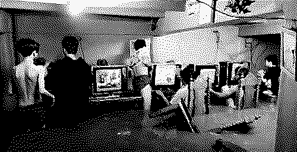
Videos from a computer shop owned by Sio Samson during Typhoon Fabian, July 2021
There's a video of a computer shop in Cainta, Philippines where the floodwaters go up to the thighs. The boys have their headphones on, their polyester shorts hiked up, still playing Crossfire. Empty chairs and wrappers float up, and power cables run from the top of the room (precautions from previous storms). We know all the storms by name. We play with our lives. This is the image of the tropical technologist.
If technology is largely characterized by human manipulation of the environment to its ends, then the archipelago's struggle with technology is one of constant weathering. Air conditioners relentlessly whirr in attempts to regulate heat, winds signal us to shelter, and satellites patternize all beyond our control. At times, nature attempts to reclaim itself, standing against all we've done to contain it. We respond in turn: more wires, infrastructural messes, generators, messes our bodies together. Much of nature's wrath is just natural consequence. Rapid industrialization and urbanization irreversibly alter climate, unruly disaster predictions understate chaos, it rains inside data centers. Environmental inputs don't just provide suggestions for sustainability, but become the mediators of their possibility. Our command of technologies is inseparable from the climates that it emerges from and is used within: so much that the elemental embodies the technological, and the technological constructs the elemental.
Third world technologies present alternative imaginaries for environmental computing that reject utopian visions of control. A tropical technologist embraces intermittency, seasonality, and scale, acting as a steward of land and machine. Living between extremes of dry and wet, blackouts and fragmentation shutter our attempts to control the weather—we merely adapt, memorize, survive. Ecologies are read as cybernetic systems; all environmental instability merely responds to human attempts to reign over it. "The earth is a machine of variation," describes new media theorist Jussi Parikka. To borrow from the land of excess and leftovers, we'll look over studies of technologies at different scales—examining how the tropical technologist might navigate, establish, defy, reinvent, and be imprisoned by the ever-blurring lines of atmosphere and machine in the age of the anthropocene.
THE PISONET
For people in the peripheries, life is lived in bundles of small plastic packets. Shampoo, coffee, seasoning, and toothpaste hang across the beams of neighborhood stores, often purchased by the many who do not have disposable income to buy more than sample-size goods. We drink small pours of soda in plastic bags, wash the bags clean and store it in a plastic bag of plastic bags. These same sundries sell prepaid load cards for mobile data for as low as US$2, connectivity in fragments. Tiny mountains of the rubbish of our lives pile up in street corners, shining in every color.
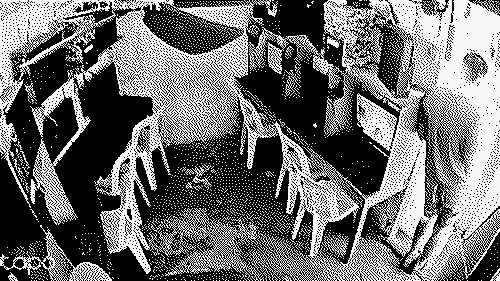
The third world sachet economy extends to the technologies we use, perhaps best exemplified by the pisonet machines that arose in the late 2000s. Pisonets (piso internet) are coin operated computers encased in wooden arcade machines, vending minutes of internet use for as little as PHP1 (US$0.020). They function as an even more restrictive & incremental alternative to computer shops (which also offer timed access), set up by local entrepreneurs in provincial and slum areas where many lack their own machines or where cellular connectivity is too poor. (In the Asia-Pacific, Filipinos have the highest time spent on the internet, some of the more expensive rates, and the slowest internet connection speeds.) Other alternatives have emerged: there is also the more miniature piso wifi, another connectivity vendo that provides internet access (no machine), in case you have your own phone.
While the western world enjoys ubiquity and speed, the tropical technologist faces exorbitant costs and connectivity issues, assuming they are able to be welcomed into the network at all. Because of this infrastructural poor, we find inventive yet capital-driven solutions to connect to the rest of the world with internet offered in sachets. Across the archipelago, the pisonet attests to the fragmentation of access itself.
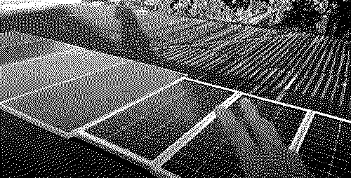
PAANO MAG SOLAR SET-UP SA PISONET, Buddyfroi
Recent years of record heat have caused unprecedented power calamities. El Niño's heatwaves stress Manila's centralized power grids as fans and air conditioners blast and hydroelectric supplies damper. In May 2024, at least 23 power plants across Luzon went out. Governments begged for the public to minimize use as the heat index soared to up to 46°C.
Pisonet owners begin to find inventive solutions: after all, the machine itself contests the fragmentation of our archipelago. Low-cost solar setups arose as popular add-ons, plopped on top of corroding aluminum roofing, helping offset exorbitant electrical costs while guarding against power outages. We make our own distributed grids, find localized ways of living amidst crises. Boys continue to play through the storms.
Reductionist views of the tropics might associate it with dysfunction, (urban) jungles—a backwards world. We are a proper poor, where lights flicker and we boil water in kettles for hot baths. An island atop of fault lines always on the verge of an end. While the other side of the globe might enjoy increasing efficiency that in turn, leads to continued extraction—simply hungering for more and more. Compute is the new oil, after all. But there is something beautiful about the necessary roughness of scarcity: we reject ubiquity and everywhere-ness, we use only what is needed (because that is all we have), the slowness of our infrastructure actually present the truest mode of sustainability beyond the harnessing of the sun: simply needing less.
But in the tropics, bodies and time are slow. We watch over each other's shoulders, heckling one another in cramped spaces and alleyways. Access is precious—so we inherently adopt a kind of intentionality with technology that times itself with natural resources. Bandwidth limitations further aid this sometimes unintentional sustainability: we load low-resolution images from off-market phones (if they load at all), stream in 240P, live with throttled download speeds, and sometimes can't access more than a handful of sites at all. The computer is only 'on' when the sun is, not by choice but by circumstance. We are intermittent, islanded, and deeply intimate with the limitations of the land, as fluid as water.
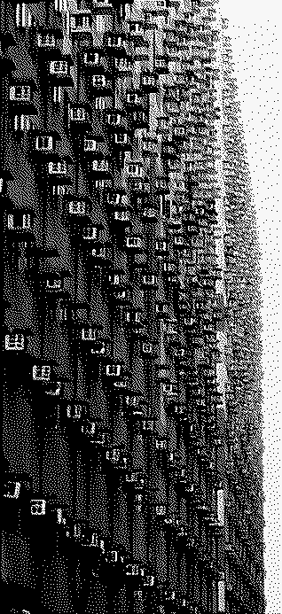
SMDC Shore Residencies, Manila, Philippines
THE AIR CONDITIONER
Where the pisonet suggests we might embrace intermittency and move towards slowness, the air conditioner presents a climate paradox. What if the technologies we've relied on to survive are the very cause of our suffocation?
The modern air conditioner was invented in Buffalo, New York in 1902 to help regulate humidity in a publishing house. It spread to flour mills and Gillette factories, devised for industrial productivity & quality, with the tolerable temperatures for laborers being a mere side effect. It was re-explored for comfort reasons a few years later 1906: theaters often shut down in the summer due to the heat, but the air conditioner could change this. So led to the rise of the summer blockbuster and the shopping mall.
Later, on the other side of the world, the Crystal Arcade of Escolta, Manila opens in 1932—the Philippines' first air-conditioned shopping mall. It is destroyed in World War II.
Under brutal temperatures, Filipinos flock to malls for their conditioned atmospheres. Within, everything is controlled, it's not just the weather: every service imaginable at every price range advertised, where a nation's urban sprawl has delegated it as the public space, a proxy for parks, the beacon of modernity—clean and cold, the opposite of the city. Metro Manila has 317 hectares of urban parks and 368 hectares of retail space occupied by the top ten major shopping centers alone. The mall is the city itself. Public transportation routes go through Mall A to Mall B. I went to church inside a shopping mall.
It is no surprise that the American mall is at its deathbed while the Philippine supermall thrives. Here is the tropical climate crisis, there is no pisoweather and only the big players can talk. Microcontrol of the weather at the expense of the macroclimate, where Western stores and mass profiteers control the flow of our bodies in exchange for our purchasing and servicing. In the summers, malls experiment with cutting wifi and AC to avoid immense crowds. Malls and air conditioners become extensions of colonial control.
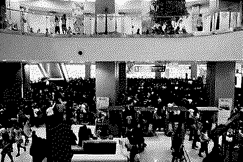
Erik de Castro/Reuters
How much of this is to blame from centuries of western shaping? Malls, capital, waste, and excess. Stores are lined with western brands, we follow western trends, speak in English and make our voices sound neat. Upper class Filipino culture is mocked for their reliance on air conditioning: from their air conditioned homes they step into air conditioned vans and then get dropped off right in front of air conditioned malls — sun-kissed skin and sweat are symbols for poor, for lack. We once roamed the seas.
The Philippines is no stranger to colonial technologies: karaoke from the Japanese provides moments of solace, bahay na bato (stone houses) from the Spanish style most ancestral houses, and jeepneys from refurbished American military vehicles have become a reclaimed national symbol. Today, the American air conditioner is a new colonialism: our reckless attempts to control the weather driven from capital, and the long-term climate collapse that comes after. Cooling, an invented privilege, becomes an inescapable cage of our masking, dotting skylines with wires and mess.
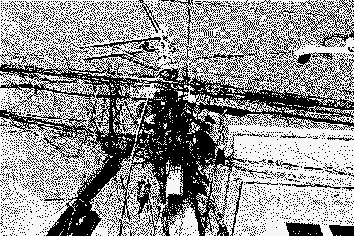
Powerlines in the Philippines
There are limitations to blaming the individual consumer, even if it's a favorite option. All these issues stem from systems and scales larger than what we can comprehend. We feed from plastic because we have no choice; the sachet economy is a result of corporate greed. How are we to blame the vulnerable and elderly for a reliance on cooling when the heat kills? First world countries import their waste to the third world, with the United States exported 276,200 shipping containers worth of waste to developing nations in 2017. In the gated suburbs, there is one air conditioner turned on in the whole house, and a family of four all sleeping together in the same bed. The subtle drone in the air is the ambience of upper middle-class Manila. There is a network that is always on elsewhere, drawing computational power from the many hungry.
THE DATA CENTER
If the urban tropic is characterized by its entanglement with the colonial project of malls and the consequences of air conditioning, the rural tropic faces its industrial equivalent with the data center. As digital infrastructure demands physical space, we continue to create artificial environments. Still, we face a real reality: our lands are turning into clouds.
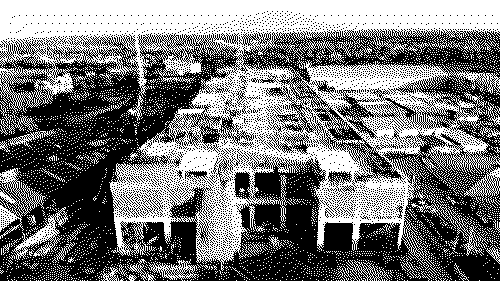
VITRO Sta Rosa under construction
50 MW capacity VITRO Sta Rosa opened its doors in July 2024, boasted as "the nation's first true hyperscale data center." Data centers offer centralized solutions to computational power, storage, hosting, backups, and other technical needs at continental scales. VITRO aims to attract foreign investments, servicing tech megacorporations and other Asia-Pacific players, even amidst infrastructural challenges in an already resource-stressed archipelago. The same month, Typhoon Carina batters the country. Floods lead to surging power demands, the island's power grid goes on yellow alert, with 300,000+ homes losing power.
Telecommunications giant (and monopolist) PLDT has been in the data center game since 2000, but in recent years, demand has soared. The company's data center capacity was at about 146.2 MW in August 2024, but PLDT is already eyeing its next and 12th one, dreaming of twice the capacity. New facilities seeking to cater to AI's needs, which have even higher energy demands. Each year, capacity is now expected to double or even triple. To meet these capacities, these centers will need renewable energy solutions (to hold off storms) and liquid cooling systems (to withstand the heat).
Department Circular No. 2017 prescribes the Philippine Government's Cloud First Policy, dictating that government departments and agencies accelerate towards cloud computing adoption. Plagued by bureaucracy and legacy systems, the circular continues to describe cloud services as 'robust', 'up-to-date' and 'state-of-the-art', comparing Singapore, Saudi Arabia, and the United States as successful peer adopters. Data sovereignty is also invoked: "no such data shall be subject to foreign laws, or be accessible to other countries"—the cloud must only rain above our territories. Bidding for the Subic Data Center, the key to the National Government Data Center project, began in 2023. As of 2025, the center has yet to stand, in part due to budget constraints.
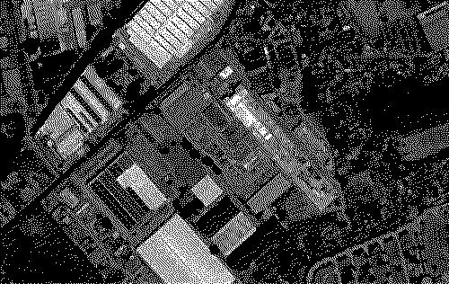
Other corporations aren't ready to bite. The SM Group, the largest national conglomerate (who own 89 shopping malls in the country, all prefixed with SM) cite expensive power costs and calamities as risk factors. Interruption is disaster. These machines do not fail gracefully, they fail all at once—any downtime is an immense loss. With SM in the business of malls (masters of profit) and PLDT in monopoly with weak telecommunications (with little incentive to improve services for the general public, especially due to no competition in the current duolopy) probably stand at opposite ends of the spectrum for a reason.
Individual attempts at decentralization are still throttled by the giants of the network. Last year, it was estimated that 60,000 telecom towers were needed to meet the demand of the archipelago—while only 12,000 independent common towers existed. If we've been throttled for decades on cellular investments, this attraction to the 'hyperscale' data center makes priorities clear. (The same conglomerate owns both PLDT and Meralco, the energy giant that covers 55% of the country's electricity output, including Sta. Rosa.) The populace still suffers from an increasing digital divide. If we consider cooling, take the blame on the individual and multiply it ten thousand fold, and you'll have a rough picture of the needs of an average data center. Machines in farmlands carry the weight of nations beyond us, while we can barely sustain ourselves. Digital land has become more precious than physical land.
Once, we listened to creation mythologies that described the beginner as all sea and sky. We move towards a world of cloud: all our resources are slowly being reclaimed to host a digital ephemeral. Land, water, and energy all face insecurity, yet we are more invested in controlling the climate for computers rather than ourselves. In my childhood home, the fans point not to us, but to the computers so it is possible to work.
As these battles broil, I can't help but think of the adjacent battle farmers face. Under incessant heat, timing their workshifts to end before the heat causes it to become physically impossible to work. But the sun is no issue when there is no more land to sow. Land grabbing illegally seizes the livelihood and homes of peasant workers, handing over hectares to subdivisions and complexes. At the border of Sta. Rosa, Calamba, and Cabuyao sits the 7,100 hectare Hacienda Yulo, where farmers have been violently losing their land since 1911 due to contest from real estate companies. Those who enrich the land are the poorest, and those who build for the cloud profit.
…they returned and set on fire Mangubat’s house even while his wife Dottie was inside.
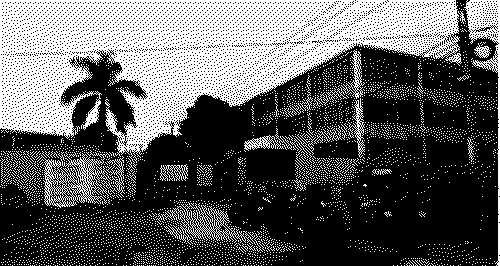
Central Luzon visit, House leaders check what’s left of raided POGO hubs.
THE POGO
In June 2024, Filipino authorities rescued 207 human trafficking victims from Lucky South 99, a 10-hectare gambling conglomerate in Porac, Pampanga. Porac is a developing industrial hub with agricultural roots with hectares of farmland are for sale on Facebook Marketplace. Think of what Menlo Park is to Meta, except to an illegal business nestled between fields and a golf course. (Lucky South 99 was mounted on 10 of 46 hectares of land that were illegally seized from farmers.) At least 40 other facilities in the province were raided.
Philippine Offshore Gaming Operators (POGOs) are umbrella terms for predatory online services like electronic casinos, sports betting, scam hubs, clickfarms, and cryptocurrency schemes. POGOs largely service clients from other Asian nations, mainly China (which has banned casinos operating in the mainland), and multiplied during the 2016 presidency of Rodrigo Duterte. Smaller operations take over apartments and condominiums, gentrifying cities—but POGO hubs rise to meet multi-billion peso demand, forming industrial parks with company shuttles, dormitories, grocery stores, karaoke rooms, training rooms, Olympic-size swimming pools, and torture rooms. Inside, distressed workers with no choice. POGOs promise economic growth and job stability, but the scale of these illicit operations make way for abuse, human trafficking, and murders. Love scams (also known as pig butchering), crypto fraud, and gambling sites run with the quiet support of politicians and real estate giants, invested in money no matter how it is made.
The issue is beyond the Filipino. Lucky South 99 rescued 158 foreign nationals, many women were sexually trafficked and men were tortured. Most workers are swept away from their home countries with the promise of lucrative, digital jobs—and are suddenly stripped of their passports, goods, and eventually their identities, stuck in these compounds in a foreign country. Female victims awaiting deportation back to their home countries are sometimes pregnant, with what is now termed as 'Pogo babies'. If you've ever stopped to question who are the people behind scams, did you ever guess that it would be modern day slaves? A whole economy has risen from preyed people preying on people.
It is not just POGOs that are in the business of exploitation. Many rebrand to call centers and Business Process Outsourcing (BPO) hubs, industries which contribute 7–8% to the nation's GDP. Globally, companies from tech, education, travel, to finance outsource customer care, IT, data labeling, and other menial service work to the Philippines. While BPOs are also a big sphere of operations, they are not without their abuses, built upon a distancing between the exploiter and the exploited. 'Innovation' happens on the other end; the dirty work is left here.
Tropical bodies serve as technological infrastructure. It's not only our land and resources that are extracted, but our bodies too. Humans label, screen, tag, and order data needed by AI, sometimes even performing the work themselves under the guise of AI. Content moderators clean social media feeds of extremism and gore in dehumanizing conditions. Virtual assistants become the backbone of digital businesses where labor is cheap. Semiconductor factories pay substandard wages and union bust as profits rise (electronics account for about 60% of national exports). The tropical technologist has been perfectly engineered for this role: valued for their proximity to whiteness, cleanliness of voice, and their lack of choice. All these make ease of our erasure, where progress seems to involve removing, or more precisely, obfuscating the humans from the equation. The tropical technologist is continuously undermined as slow, inefficient, cheap, and backwards—even when our actions are the very determinants of 'progress' for much of the world. Not only do they want our bodies, but they want our very identities.
We might be the most resilient machines: operating despite our land, mind, weather, and bodies ripped from us, slowed down by systems beyond us, servicing without question. We are cyborgs as Donna Haraway might place it, the results of both a social reality and the many fictions that have been ascribed to us, struggling with the new modernity. We might be the beginning of the world's end and the country of the new technology.
THE TECHNOLOGIST
As an archipelagic people, we know the soil, semiconductors, and seas. We weather all that come with it, live in accordance to the storms, face the realities of all conditions once hidden, and respond to ecologies beyond our control. The tropical technologist has given their land, mind, and body to the machine. The tropical technologist has become machine. For all divides of low and high technology, we are its backbone at every order. Technology has reformed all nature, and this is truest in its reformation of the tropical human into an exploited, but well-oiled machine.
The pisonet models the fragmentation of the tropical technologist and their resilience; the air conditioner points to the entrapment of our people to capital and colonialism; the data center speaks to industrial priorities and amidst a national crisis with ongoing disregard to the land, food, and energy crises that the populace needs; and the POGO reveals the explicit degradation, violation, and undermining of our identity, with our bodies as infrastructure.
As the human that has become machine, our tropical bodies present alternative ways of being. Just as we once constructed machines to extend human capacity, we might reconsider the ways we decentralize, use, and live in this age: to embrace intermittency, adapt to the sun's energy, prioritize localized infrastructures. But, where solar-powered servers and low technology are choices in the western world, the tropics remain plagued by larger infrastructural gaps. The least we can do is take action to prevent the continued deterioration of ourselves and machines. Our lands are razed by corporations, connectivity remains limited, the world's systems are built off our exploitation, and face one disaster after another. We are not helpless, but we also are a cautionary tale: climate instability is only intensifying, and the third world will no longer be able to shoulder it alone. Let the tropical technologist be visible—look towards those who have stewarded both the material and technological worlds most closely.
Our relationship with the environment turned technology is one of becoming rather than dominion, a symbiosis that knows that technology reconstructs the human as much as human makes technology. Instead of supremacy, there is stewardship. In this archipelago, we've become both weathered and weather. Our bodies run off fire and water, we continue to play in floodwaters.
Technology was once a process to separate ourselves from nature, possessing it. Now, technology is our becoming-one-with-nature, a return—as the tropics have always felt it.
Chia Amisola is an artist devoted to the internet's loss, love, labor, and liberation from Las Piñas, Philippines. They make ambiences, performances, and tools on third world infrastructure, intimacies, & identities.
[1] El Niño is caused by warm surface temperatures in the Pacific Ocean, leading to intense droughts and water scarcity.
[2] Facebook's Free Basics plan was once tested in the Philippines, providing free access to mobile data but only allowing access to a limited amount of websites. Most people just went on Facebook.
On being a geologic force
by Xiaowei Wang
"The stone is alive without my hand just as this sentence lives beyond my inevitable transmission. Or is it translation? Perhaps a transfiguration."
— Dear Book by Angel Dominguez
Underneath the mud, bubbles fizz and form into a chorus of breath and gasps as thousands of tiny creatures move pockets of air to the surface. Gulp. Standing on the tidal flats of the Fangyuan Mangrove Wetland outside of Changhua in Taiwan, each gust of wind brings a whiff of salty brine, strands of my hair lashing erratically into the blue-grey, subtropical winter sky. Shells line the edge of a small, narrow walkway: remnants of mussels, gnarled chalky rocks that reveal themselves as oyster shells, twisted conches. A few diesel powered tuk-tuks zoom by, bouncing with netted bags of mussels and oysters. In the late 2000s, the health and integrity of the tidal flat was under threat as the Central Taiwan Science Park (CTSP) in Changhua began to expand, growing to include a number of electronics companies such as AU Optotronics and TSMC, the world's leading maker of semiconductors. Local environmentalists, farmers and shellfish cultivators clashed with the local government as they contested the rushed environmental impact assessment process, with concerns around wastewater discharge from the electronics factories. These groups had seen how early on in the 1990s, in the Hsinchu Science Park an hour north, wastewater pollution from electronics manufacturers wreaked havoc on the local aquaculture industry, tainting oysters and mussels, turning them green from copper. After years of protests and lawsuits, the fight is ongoing in Changhua. While the CTSP ended up agreeing to not discharge wastewater at all (relying on a closed water recycling system) the announcement of future, more advanced TSMC fabs that require even more water resources in the area is currently making many local farmers nervous.
Semiconductors are pervasive in our lives, and so is the highly toxic pollution emitted as part of the manufacturing process — a fact that all of us living in the Bay Area know from its toxic legacy in South Bay. As I type these words on a computer powered by chips in 2025, semiconductors have also become an embedded, everyday part of our "technosphere", a term that Peter Haff uses to describe the almost totalizing sense of computation that surrounds us. A perverse (almost) truism that chips power modern life in America: inside your 'smart' fire alarm, our phones, the CPUs that make up our computers and servers, the GPUs that make the current AI industry boom possible. The objects and networks of our technosphere require huge amounts of energy, relying on extractive industries from rare earth mining to coal burning power plants. These forms of energy and resource intensive computing are a form of what I call imperial computing, a geologic force in which extraction and violence is carried out in the name of progress and profit, where computation is tied into narratives of enlightenment, nationalism and technocratic power. Confronting this force of imperial computing means not only understanding how to make computation more sustainable or less extractive, but also the embedded assumptions that make forms of violence in the name of progress feel inevitable.
A number of artists, writers and technologists have underscored the impact of computation on our environment, and the contradictions at the heart of dominant, imperial forms of computing. The Critical Carbon Computing Collective point out an important paradox: both computation's enormous use of energy and its subsequent climate impacts, alongside the use of large-scale computation in order to better model climate impacts. We can't ignore the geographic dynamics of this: massive amounts of energy use for computation by countries in the global North that further exacerbate climate change, all the while perpetuating these technologies as potential environmental saviors in the face of a crisis that is unevenly shouldered by people located in global majority regions.
"Digital energetics" of data centers, as well as concepts of "energy centered computing" also serve as a way of reframing our understanding of computation, beyond the final end product embodied in frictionless, sleek aluminum boxes and flat interfaces and into seeing computation as inherently environmental. As demand for hardware and energy due to increasing global internet use and the generative AI (artificial intelligence) industry is projected to boom, questions abound from a multitude of disparate directions: whether AI tools can be life stewarding, whether AI could become more sustainable, whether the internet becomes an even more critical infrastructure under climate change, whether, during a real and ongoing climate crisis if the costs of seeming near future benefits sustained by enormous amounts of capital are worth the sacrifice of the present.
The present. The brine, the unseen mussels and clams hidden under mud poked with air holes, calcium carbonate shells of oysters that straddle the blurry line between living appendage and ancient rock. The critical wonder of a living being producing its own ecosystem and geology. The geologic media, quartz and rare earth that allow servers to hum with seeming properties of emergence and 'artificial' intelligence. What we face in this present moment of planetary crisis and pervasive, imperial computation is nothing less than a colliding set of existential narratives around what life is, and what makes life worth living. As the life and livingness of many beings on this earth continue to die and become extinct from layers of climatic and environmental toxicity, a new, computational narrative of "life" is entrenching itself into our imaginations, a life that is disembodied, a life only worth living through its capacity for productivity and 'intelligence'. But what if we viewed life beyond its capacity for a strangely narrow, human-centric understanding of intelligence?
In reckoning with the inevitable toxic waste of computation, we are confronted with the fragile categories we make through complex means, including the categories of living, non-living, intelligence and non-intelligence. In Geontologies: A Requiem to Late Liberalism, Elizabeth Povinelli examines geontological power, or the kinds of power inscribed in determining what is "living" and "non-living", and how geontological power hides the extractivist logics of contemporary capitalism. One of her central examples is the case of "Two Women Sitting Down", a sacred Aboriginal site and geological formation located near Bootu Creek in the north of Australia. Manganese was present at the site and manganese is said to be the blood of the two women sitting down. However, the mining company OM Manganese caused part of the formation to collapse during a mining operation and in 2013, the mining company was convicted and fined for site desecration. Povinelli uses this example to provoke questions around geontological power, and to unsettle our taken for granted, narrow understandings of life and livingness in many contemporary, Western spaces — including our understandings of the technosphere.
These questions of life and livingness are also not easy to answer from a physics or chemical standpoint, as theoretical physicist Sara Imari Walker points out. "What is life?" feels like such a basic question and yet, answering it and the subsequent question "How did life originate?" is extraordinarily difficult, as Walker writes. After all, asking "What is life?" means asking, what is the difference between a set of chemicals and chemical networks and the same set of chemicals and chemical networks, spun into human form? How living is a dormant seed that becomes a tree? According to Walker, as well as other scientists, our current laws of physics are unable to answer this seemingly simple, yet daunting question, of how to define life.
The stubbornness of semiconductor pollution reminds me of the porosity of life, how it will always exceed any mental categories and measures we create around the living and the non-living, the natural and artificial. Semiconductor pollution includes a vast array of chemicals, many of which are colorless and odorless when released in small, but still extremely harmful amounts into wastewater. Over the past 50 years of electronics and chip manufacturing, it's estimated that at least 48 new chemicals have been introduced in the process, and emerging chemical pollutants like PFAS (forever chemicals) are released into wastewater from semiconductor fabs throughout the world.
Yet the remarkable extent and severity of semiconductor fabrication pollution is more than a story of how imperial computation damages our planet along certain points in the supply chain and how transnational boundaries are being crossed as a result of high tech, digital industrial toxicities. Just as imperial computing relies on the violence of extraction, the so-called "waste" of its industrial processes reinforce existing structures, hierarchies, logics and relations. Pollution (to borrow from Patrick Wolfe's phrase on settler colonialism) is a "structure, not an event". Scholars such as Max Liboiron, Melina Packer and M Murphy have long written about how pollution and toxicity are constructed, with concepts of "dose-response" (the idea that there is only a biological response to poison at a certain level), as well as "pollution thresholds" that allow certain amounts of chemicals in wastewater and drinking water. These kinds of thresholds are ubiquitous throughout the world in environmental policies. They mark another way in which companies are given the continued right to pollute, despite evidence that many pollutants, especially endocrine disrupting chemicals (EDCs) like PFAS are not safe in any amount, no matter how small.
There is no separation between ourselves, our technologies and our environment — only a delicate balance in how we have decided to use elements that we find, and entering into new relationships with them. Livingness is a reminder of this particular set of intricate relations. Imperial computing seeks to sever our sense of relations, and to render certain relations into a hierarchy. Grasping with the inherent relatedness of all things can become dizzying. The carbon we depend on for our existence can also form alliances with other molecules to become a toxin, a climate threat that is totalizing in its dismal reckonings. The silica of our semiconductors also make up our bones, yet silica inhaled becomes poisonous to our lungs. Toxicity, write Liboiron, is not just "wayward molecules behaving badly". The boundaries between life and non-life feel especially fragile in the case of endocrine disrupting chemicals (EDCs) like PFAS. Our endocrine systems are the 'information system' of our bodies, regulating internal and metabolic functions through hormonal messaging. Discerning information from noise is a key capacity of our body, yet EDCs disrupt this capacity, mimicking hormones or confusing our bodies' endocrine systems, disrupting reproductive and metabolic processes, eventually leading to illnesses like cancer. The hazardous chemical effects of semiconductor manufacturing have been documented in many former floor workers and fab operators, who experience higher rates of cancer and leukemia. What is created as waste from the industrial processes of imperial computing become afterlives and disruptions downstream, as people are unevenly forced into new relationships with chemicals.
Downstream I find my way back to the tidal flats, the places of life and the capacity for livingness to be in-between and amphibious. In a frame that forgoes the stubborn boundary between living and un-living, computing inside the "interminable catastrophe" of "permanently polluted worlds" maybe asks us instead to acknowledge and hold the grief and despair of chemical afterlives, the detritus, residue and wreckage of imperial computing. In Natalie Osbourne's "For Still Possible Cities", Osbourne contends with the fact that maybe the revolution we desire is an obstacle to our flourishing, that maybe all we can do is sit with the loss and the grief. And from that place of loss, to begin on projects that do not tend towards replication, expansion — and in the context of imperial computing, extraction. Sometimes I think, perhaps the natural world, separate from us were metaphors that could serve as models for 'better' computation: computing like a tree, architecting infrastructure like a coral reef, designing systems as resilient as a garden, as if we knew everything there is to know already about trees and gardens, coral reefs and oyster beds. We still have so much to learn from the in-between places, from relations like oysters whose bodies transfigure organic material into rock, and even more to learn in how to survive in the tides.
Xiaowei R. Wang, PhD is an artist, writer, organizer and coder based across the Pacific. Their multidisciplinary work over the past 15 years sits at the intersection of public art, tech, social and environmental justice.
THE MATERIALITY OF DIGITAL INFRASTRUCTURE
By Andrea Steves
"this website is a single file on a solar powered server"
This declaration, appearing on Carrie Hott's ourshiver.org, announces a quiet disruption, one that reveals the invisible architecture of our digital lives: architecture that spans continents, consumes massive amounts of energy, and operates at a deliberate remove from those who depend on it. The project materializes what is typically immaterial, locating the virtual in physical space, an intervention into the concealment that characterizes our current relationship with infrastructure, a strategic deployment of failure that makes visible dependencies typically masked by corporate guarantees of seamless operation and universal access.
Installed at The Lab in San Francisco, the solar-powered server is an actually-existing concrete embodiment of alternative infrastructure. The website's color palette references the physical environment where the server is situated, functioning as a reminder of the geographic situatedness of data and the physical infrastructure behind the digital web, a counterproposal to the supposed "placelessness" of cloud computing.
Why isn't digital information stored in proximity to its most frequent users? Could we reorganize the physical infrastructure of the internet to achieve some sort of more geographically coherent and energy-efficient information ecologies? Hott's project questions the necessity of constant operation and duplicative infrastructure, deepening several threads within her practice towards building more localized, site-specific technologies.
REDUNDANCY + SICK INFRASTRUCTURE
The solar server deliberately embraces a potential for breakdown. In contrast to the always-on corporate web hosting with its 24-7 99.9% uptime guarantees, enabled by parallel connections and energy redundancies, solar-powered web accepts the possibility of intermittent failure due to insufficient sunlight. Interruptions render visible the material dependencies normally obscured by commercial infrastructure.
As Marina Vishmidt writes "Infrastructure is made out of time insofar as infrastructure is that which repeats... when it stops functioning, an aperture is cut into its artifice—through which history and power relations can be seen." This understanding of infrastructure connects to the concept of "logistics" from the Undercommons (Moten / Harney): the politics of circulation make visible otherwise hidden power relations precisely when systems experience disruption or breakdown. The server's slowness or occasional unavailability is a "feature, not a bug"—a deliberate deceleration that counters the accelerationist logic of commercial digital infrastructure, its demands for immediacy, uptime, and reliability, which rely on fossil fuel extraction and constant attention.
The corporate digital infrastructure we depend on daily is built on massive redundancy—duplicate systems, backup power sources, parallel connections. Because redundancy often means duplication this often means waste. Enterprise storage systems commonly contain 10-30% duplicate data. Data centers are one of the most energy-intensive types of buildings, and are responsible for significant growth in electricity demand, alongside AI and cryptocurrency consuming 460 TWh of electricity in 2022, set to double to 1000 TWh by 2026 (almost equivalent to the consumption of Japan). Redundancy isn't just a technical design; it’s ideological, reinforcing expectations of constant availability that extends from machines to human workers. Data center redundancy design has even been formalized into specific architectural models that dictate increasing levels of component duplication. In the 2N model, every critical system is fully mirrored (called “concurrent maintainability”) so that you can perform maintenance on one complete system while the duplicate system maintains operations without even a moment's interruption. Downtime costs money and productivity. But if we step back, seeing the excess that avoiding downtime might create is not straightforward: should every home have two refrigerators running all the time just for the moment when you need to maintain one?
What if instead we built infrastructure that was allowed to get sick, systems that required rest? What would our relationship to technology look like if we designed systems acknowledging their limitations rather than pretending to transcend them, embracing occasional unavailability and challenging the capitalist imperative of constant productivity?
ALWAYS ON
The critical interrogation of the "always-on" is a consistent thread in Hott's practice. Her 2017 work "The Light That Elongated The Day," commissioned for the Museum of Capitalism (which I co-curated), looked at the history of how artificial light reshaped our working hours and working lives under capitalism. After researching the museum's prominent lighting fixtures, she developed a six-week public class exploring "the end of darkness" and the implications of perpetual illumination, even going into “prepper” mentality. The basic idea: continuous electrification has created a permanently illuminated world where darkness becomes scarce, requiring constant societal commitment to maintain these elongated days that now structure our lives and systems.
In both "Our Shiver" and "The Light That Elongated the Day," Hott looks at how expectations of constant availability (of light, of data/internet) are normalized, and how this expectation reinforces extractive economic systems while foreclosing alternative temporal rhythms and relationships to technology. Where "The Light" examined capitalism's colonization of nighttime through illumination, "Our Shiver" challenges digital capitalism through its deliberate alignment with solar availability.
Media theorist Nicole Starosielski, who Hott cites as an influence, talks about "slow media": communications technologies deliberately designed to resist the imperative of instant connectivity, instead aligning with different timescales (such as those from the natural world) or a different relationship to resources. The solar server becomes an example of resistance to the generalization and financialization of energy infrastructures that my collaborator Timothy Furstnau has called the "post-visible condition"—the increasingly opaque technological infrastructures that mediate our relationship to the physical world.
Here we might also consider the politics of connectivity and disconnection, which are resonant and visible within a global landscape of internet shutdowns: In 2019 alone, there were 196 documented large-scale internet shutdowns across 25 countries. While Hott's server might intermittently go offline, governments from India to Russia to Ethiopia have demonstrated their power to detach entire populations from digital communications— often to suppress protests, to control information during elections, or to silence political opposition. This exercise of power determines who participates in digital social life and who is excluded, essentially deciding whose connectivity matters, as theorized by Achille Mbembe as “necropolitics”. Whoever controls the infrastructure controls the horizon of what can be imagined, shared, saved, expressed, and collectively realized.
NETWORKS OF PRACTICE AND POSSIBILITY
"Our Shiver" also exists within a lineage of artist-created technological infrastructure. According to Hott, without this emerging ecosystem of practices, her work might not have developed in this way. She draws inspiration from precursor projects like Low Tech Magazine's solar website, (initiated by Kris De Decker), which uses solar power to host a minimalist, energy-efficient website that goes offline during extended periods without sunlight; Solar Protocol (a collaboration between Tega Brain, Alex Nathanson, and Benedetta Piantella), which created a network of solar-powered servers across different time zones that directs traffic based on which server has the most available solar energy; and Low Carbon Methods, which develops sustainable digital design practices and frameworks to reduce the environmental impact of websites and online services.
Artist-run, DIY projects also often cite one another, and in this sense begin to form a constellation, a distributed network, which recalls earlier artist-run spaces and infrastructure projects. These projects span Fluxus mail art networks (such as Ray Johnson's "New York Correspondence School," where collages, drawings, and instructions created an alternative distribution infrastructure for art) to the alternative spaces movement of the 1970s, and through contemporary "non-art" examples like the Decentralized Web movement. Many of these projects built alternative platforms that took on a life of their own, sharing generosity and an ethos of open-source technology, encouraging other similar projects to develop. The significant distinction in these projects lies in the emphasis on building rather than merely critiquing—creating functioning alternatives that can be adopted, modified, and expanded by others.
Within contemporary art practice, we might ask: What are the possibilities of artist-run infrastructure projects that remain entangled with the very systems they attempt to move beyond? How can one work from "inside" existing technological systems while challenging their fundamental logics?
Hott is the first note that even this project has its inherent contradictions: a solar server simultaneously rejects corporate digital infrastructure while proposing alternative possibilities, yet relies on mined materials and global supply chains, with components ordered from Amazon. She talks about the work as "a counterpoint, or a shadow, or maybe a troll"—an intervention that works alongside rather than totally replacing existing infrastructure (but makes a statement even in its parallel existence).
As Vishmidt reminds us, "infrastructure might be that which repeats, but this repetition is not without difference: it can monotonously produce the same differences (such as infrastructures that reproduce social inequalities), but it can also be a means of ensuring the reproduction of a wholly different form of social life over time." The project attempts to build an infrastructure that repeats differently, puncturing the seamless operation of technological systems through which new formations might emerge.
In this sense, "Our Shiver" can be understood not only as a prototype of an alternative web server but as an alternative computational imagination; technology implies or reinforces social relations, where different tech configurations are also prototypes of different social formations. Meaningful alternatives begin at the local level, building outward through communities of practice rather than imposing universalized solutions, creating spaces of resistance. While Hott's server may seem small against the backdrop of global internet infrastructure, it points toward a different kind of network ecology: one where interruption is expected; connection is intentional rather than constant, local rather than placeless, and aligned with natural systems rather than corporate demands.
Andrea Steves an artist, researcher, curator, and organizer currently based between Vienna, Austria and New York, USA. She explores the intersections of capitalism, climate change, ecology, and museums.
[1] US DOE cites data centers as accounting for 2% of US energy usage and growing: https://www.energy.gov/eere/buildings/data-centers-and-servers
[2] https://www.iea.org/reports/electricity-2024/executive-summary.
[3] For further reading, Starosielski, Nicole. “9.Grounded Speed and the Soft Temporality of Network Infrastructure." In Volmar, Axel, and Kyle Stine, editors. Media Infrastructures and the Politics of Digital Time: Essays on Hardwired Temporalities. Amsterdam University Press, 2021. JSTOR, https://doi.org/10.2307/j.ctv1xcxr3n. Accessed 28 Apr. 2025.
[4] "Petroleum on display: Visual Culture and the Post-Visible Condition" Timothy Furstnau. 164. In Davis, H., Alieva, L., Beitin, A., Klose, A., & Steininger, B. (2022). Oil: Beauty and Horror in the Petrol Age. Walther Konig.
[5] When President Emmerson Mnangagwa of Zimbabwe shut down the internet after fuel protests in 2019, it wasn't to align with ecological rhythms but to "prevent images of heavy-handedness in dealing with protesters from being broadcast around the world." Similarly, when Indian authorities imposed 134 internet blackouts in 2018 alone—many in Kashmir—they weren't exploring alternative temporalities but asserting control over information flows. https://www.accessnow.org/wp-content/uploads/2020/02/KeepItOn-2019-report-1.pdf TARGETED, CUT OFF, AND LEFT IN THE DARK The #KeepItOn report on internet shutdowns in 2019
[6] Samuel Woodhams and Simon Migliano, "The Global Cost of Internet Shutdowns," Top10VPN, January 2020. https://www.top10vpn.com/research/cost-of-internet-shutdowns/2020
[7] Further examples from countries like countries like Ethiopia, where a failed coup attempt in 2019 led to a total internet blackout (https://www.aljazeera.com/economy/2019/6/25/outrage-over-ethiopias-continuing-internet-blackout), or in Chad, where the internet was “switched off” for an entire year (https://www.bbc.com/news/world-africa-47733383).
[8] De Decker, Kris. "How to Build a Low-tech Website." Low Tech Magazine, 2018. https://solar.lowtechmagazine.com/2018/09/how-to-build-a-low-tech-website/
[9] Brain, Tega, Alex Nathanson, and Benedetta Piantella. "Solar Protocol." 2021.
[10] Frick, Tim, and Tom Greenwood. "Sustainable Web Design." A Book Apart/Low Carbon Methods, 2021.
[11] Examples here include Gordon Matta-Clark's Food restaurant (1971-74) which functioned simultaneously as an artist-run eatery, performance space, and community center, or Martha Wilson's Franklin Furnace (1976) which started as an archive for artists' books and became an actually-functioning infrastructure for performance art, temporary installations, and experimental work
[12] Vishmidt, Marina. "Between Not Everything and Not Nothing: Cuts Toward Infrastructural Critique." In Former West: Art and the Contemporary After 1989, edited by Maria Hlavajova and Simon Sheikh, 265-269. Cambridge, MA: The MIT Press, 2017.
The Site
This website is a single file on a solar powered server.
The full site, including this file and corresponding images, is 1.6 MB.
view the code here
This site can be viewed from anywhere at ourshiver.site or ourshiver.com when there is enough sun in San Francisco to charge the battery of the server.
The computer acting as a server is a raspberry pi that has been programmed to function as a web server to host and serve this website over the internet ->
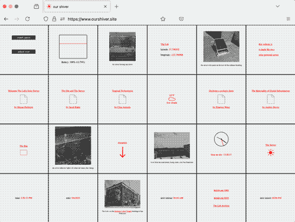
When the battery has enough charge to power the server, the site looks like this.
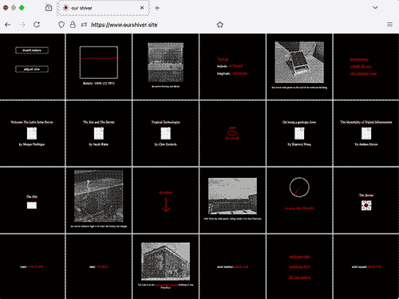
Or, if the colors are inverted, it looks like this.
When the battery is out of charge, the site looks like this.
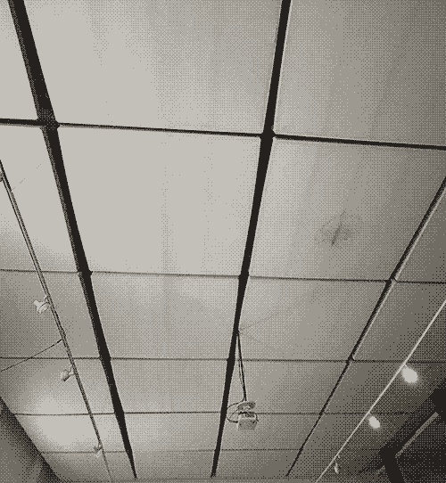
The white acoustic sound panels on the ceiling of The Lab are the basis for the site design.
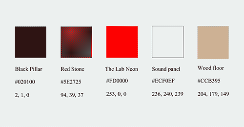
The site colors are based on the colors found in the physical space of The Lab.
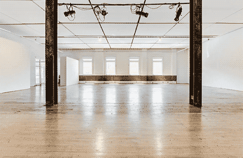
The interior of The Lab, which has brown wood floors, black steel pillars, and square white acoustic sound panels across the ceiling. #020100 is sourced from the black pillars, #ECF0EF white is sources from the acoustic ceiling tiles, and #CCB395 brown is sourced from the wood floor.
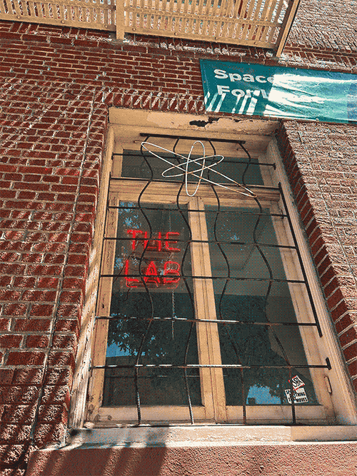
The Lab Neon #FD0000 is sourced from the red neon sign in the window of The Lab, facing Capp Street, which was contributed by artist Dora Garcia during her residency at The Lab in 2016.
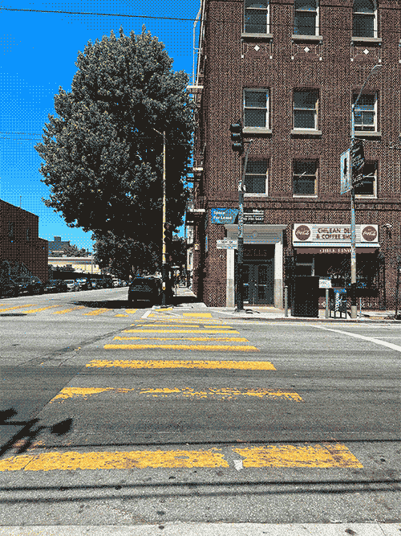
Red Stone #5E2725 is from the red brick of the Redstone Building, which houses The Lab at 16th Street and Capp Street in The Mission in San Francisco.
cloudy icon
sunny icon
partly cloudy icon
windy icon
rain icon
The Lab Neon #FD0000; icons for the weather conditions in the mission in San Francisco, where The Lab is located.
pdf icon
folder icon
Black Pillar #020100; icons for the essays and the code content on the site.
arrow icon
site icon
shiver icon
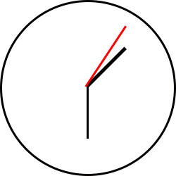
clock icon
battery icon
The Lab Neon #FD0000 and Black Pillar #020100 icons for server battery, time, weather, and site icons.
The font for the website is set to 'serif' and will display the default serif font for the device displaying the site. Most of the time this will be 'Times New Roman'.
The site is designed to be referential to the location in which it is hosted, to use as little energy as possible when displayed, and offer a constellation of content, as opposed to a hierarchy.
The Server
This solar powered web server was created thanks to these guides:
>>> Solar Powered Media Zine by Benedetta Piantella and Anne Pasek <<<
>>> homebrewserver.club guide by Roel Roscam Abbing <<<
>>> Solar Protocol server guide by Tega Brain, Alex Nathanson, and Benedetta Piantella <<<
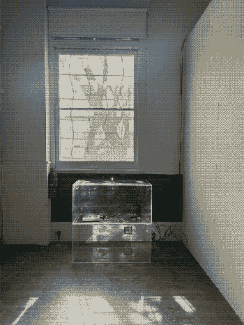Our Shiver server at The Lab
The web server that hosts Our Shiver was created to be displayed, visible, and in public view. Here it is at the entrance to The Lab, under the window that faces Capp street outside. The light at the top of the server, which glows when the battery has charge from the solar panel, is meant to be seen from the window.
Using the guides cited above this server was built thanks to the research and development of other artists invested in building their own infrastructure.
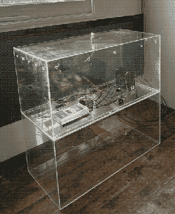
The clear acrylic cubes supporting and housing the solar powered web server were sourced directly from The Lab where they once served as pedestals or stands for lectures and performances. The top case was modified to house the server by cutting out one side and adding ventilation holes on all sides.
The hardware that hosts and serves the website for Our Shiver is a small computer called a Raspberry Pi programmed to act as a web server.
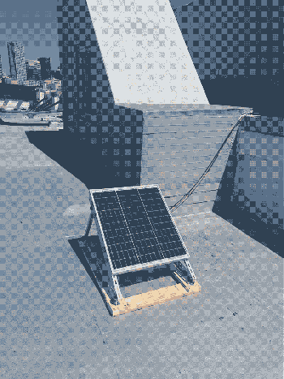
The solar panel that draws power from the sun is a 50 Watt 12 Volt Monocrystalline Solar Panel. On the roof of the Redstone Building, where The Lab is located, it is grounded by a wood base and sandbag and faces southeast towards South San Francisco and Silicon Valley.
The solar panel is angled at approximately 37 degrees, to correspond to The Lab’s 37.798302 latitude coordinate, which enables a perpendicular angle to the sun’s rays. This sets up the panel for ideal sun ray absorption.
250 feet of solar power cables run from the solar panel on the roof of the Redstone building to the Solar Charge Controller, which is where the battery and the solar panel power connect. The solar charge controller that regulates the power flow between the solar panel and the battery. Since the sunlight conditions and amount of power brought from the panel can vary, the charge controller acts as a regulating force for the battery to prevent overcharge and discharge. The charge controller, when connected to the panel and battery, indicates incoming charge and battery levels on the controller interface.
A rechargeable 12V Lead Acid battery is also connected to the solar charge controller and stores the power generated from the solar panel. This is a multi use battery that is specifically suited for the solar panel.
The square blue device that is also connected to the battery is called a Battery Protect. This device prevents the battery from completely discharging, which would damage the battery and shorten its use in the server.
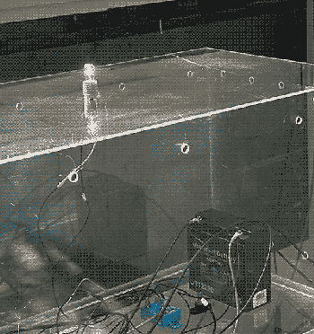
A small incandescent appliance light is directly connected to the battery, drawing direct current when the battery has charge, which powers the lightbulb and provides direct indication of whether the server has power. The lightbulb is in a small ceramic socket and secured to the top of the server case.
Two inline circuit breakers are used in the connections that run from the battery. These 10 amp and 20 amp inline circuit breakers add additional protection against current overload, protecting all of the components from a surge of electricity. These circuit breakers are also used in car audio systems.
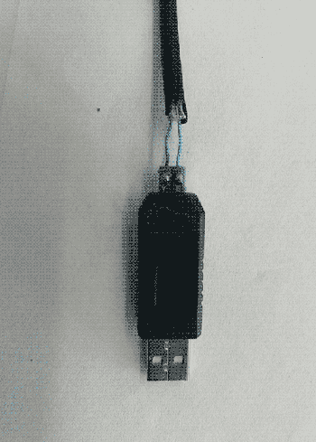
Thanks to the instructions of the server guides in the beginning of this tour, the server has a custom USB + Ethernet connection that connects the Raspberry Pi web server to the solar charge controller. This cord was created by stripping one end of the ethernet cable, until there is only one green and one blue wire sticking out about a half inch from the rest of the cable. These wires are then connected to the positive and negative ports of a custom USB to RS485 Converter Adapter with ch340T chip. This allows the pi to connect to the battery data of the solar charge controller, which then enables the battery data to be displayed on the website.
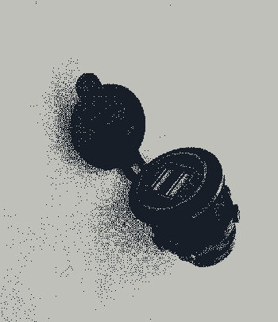
The Raspberry Pi computer receives power from a USB-C to USB cable that connects to this dual USB outlet, which is then connected to the battery by way of the Battery Protection device. It is powered by 12 volts, and has two 5 volt USB outlets.
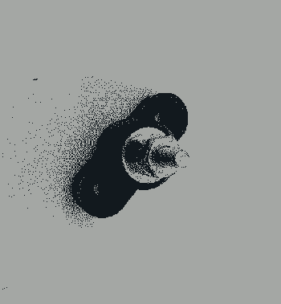
The ground wires connect at this screw, which acts as a ground for the system, providing a path for electrical current to flow back to the battery if needed.
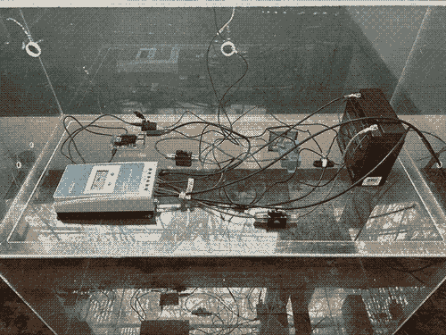
Inside the acrylic vitrine that was once a pedestal, the components all connect to draw power to the server. On cloudy days or late evenings, the battery goes down after the lightbulb has used the remaining power. Midday on sunny days, the battery returns to 100%. If you are reading this, the sun has charged the battery!
Resources
Getting Into Fights With Data Centers by Anne Pasek
Low Tech Magazine, a project by Kris de Decker
Feminist Server Manifesto
Solar Powered Media Zine by Benedetta Piantella and Anne Pasek
Solar Protocol, a project by Tega Brain, Alex Nathanson, and Benedetta Piantella
Solar Power for Artists, a project and book by Alex Nathanson
Alt-Text as Poetry, a project by Finnegan Shannon and Bojana Coklyat
Compost Party
Handmade Web
Homebrew Server Club
Queer Servers and Feral Webs, essay by Austin Wade Smith
Closer To The Metal, essay by Caleb Triscari
Our Shiver was created in large part thanks to the resources, guidance, and inspiration from these projects.